← 回到 YO! 旅行班地球導覽
YoYo 帶你認識清邁
清邁不是曼谷的慢速版本，它有自己的山城、古城、蘭納文化和生活節奏。

認識你的領隊 YoYo
我是 YoYo，一個還在累積旅行經驗、也在學著把每一次帶團記下來的領隊。我喜歡把景點背後的故事、團員現場可能遇到的小狀況，還有那些不一定會寫進行程表裡的細節，一起整理給你。
古城與寺廟
清邁不是只有拍照景點。古城裡的寺廟、城牆和生活街道，會讓人慢慢感覺到蘭納文化留下來的城市節奏。
山城與慢旅行
市區可以逛咖啡店和商圈，往山區走又會遇到森林、寺廟和比較安靜的風景；如果安排南奔，旅行感會再慢一點。
泰北味道
泰北咖哩麵、泰北香腸、街頭小吃和咖啡，味道和曼谷常見的泰式料理不完全一樣，適合慢慢挑自己喜歡的口味。
YoYo 的一句話提醒
清邁好玩的地方，不是把景點一個個打卡，而是從寺廟、山路、古城和咖啡裡，慢慢感覺到北泰自己的生活節奏。
清邁與南奔，慢慢收藏
有些地方看故事，有些地方看建築，也有些地方只是讓你感覺：原來清邁可以這樣玩。
Wat Pha Lat 森林禪院
森林寺廟安靜散步素帖山
- 這裡有什麼好看
- 森林、溪流、石階、苔蘚和比較安靜的寺廟建築。
- YoYo 小提醒
- 雨天或雨後石階可能濕滑，寺廟衣著也要先準備好。
雙龍寺 Wat Phra That Doi Suthep
清邁代表地標寺廟文化山城視野
- 這裡有什麼好看
- 金色佛塔、山上視野、參拜動線與清邁重要的信仰地標。
- YoYo 小提醒
- 進寺廟要注意衣著、脫鞋和拍照規定；山上天氣變化快。
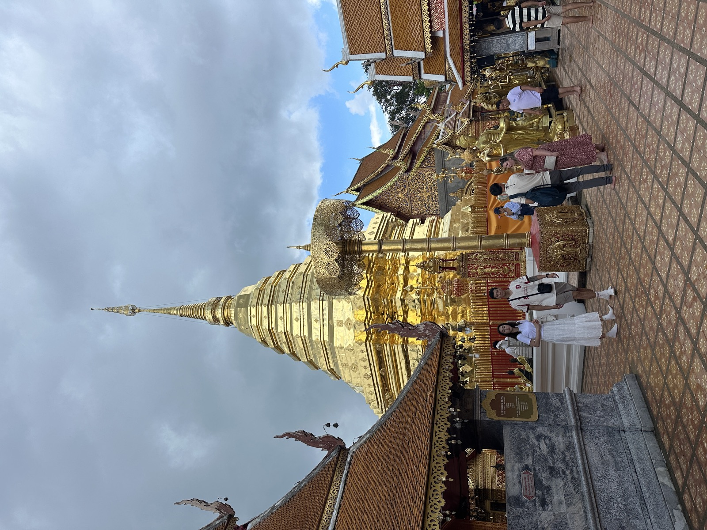
清邁藍廟 Wat Ban Den
馬登寺廟藍色屋瓦蘭納建築
- 這裡有什麼好看
- 深藍色屋瓦、白色佛塔和層層延伸的蘭納式寺廟建築，畫面很有辨識度。
- YoYo 小提醒
- 這裡屬於清邁府馬登一帶，若行程安排前往，記得跟著團體動線參觀。
三王紀念像
古城散步蘭納歷史城市故事
- 這裡有什麼好看
- 三位國王的銅像、古城中心的城市感，以及清邁建城故事的入口。
- YoYo 小提醒
- 先聽故事再拍照，會比只拍一張銅像更有記憶點。
大塔寺 Wat Chedi Luang
古蹟感古城寺廟歷史痕跡
- 這裡有什麼好看
- 巨大的磚造佛塔、老建築留下的時間感，以及古城裡很有份量的寺廟空間。
- YoYo 小提醒
- 古蹟區不要攀爬或觸碰禁止區域，拍佛像前先看現場規定。
塔佩門 Tha Phae Gate
古城入口城市明信片街景拍照
- 這裡有什麼好看
- 紅磚城牆、城門廣場、人群和古城與現代街道交會的畫面。
- YoYo 小提醒
- 拍照不要站到車道，也要記得集合時間。
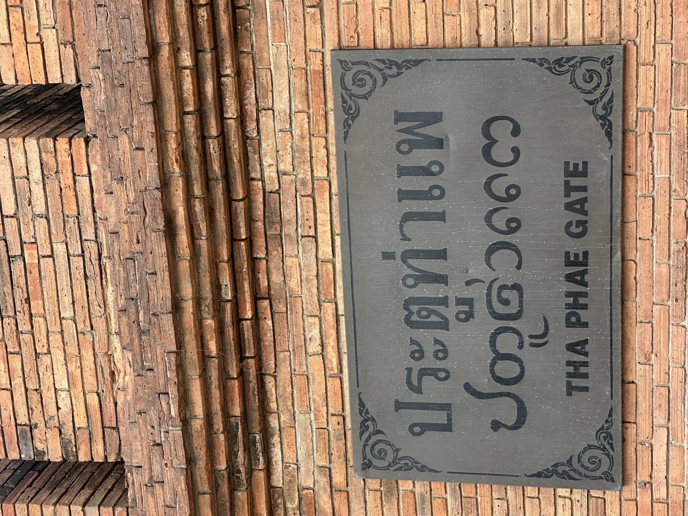
尼曼商圈與尼曼一號
咖啡生活文青商圈自由活動
- 這裡有什麼好看
- 咖啡店、設計小店、餐廳、尼曼一號與文創商品，還有帶著北泰風格的建築細節。
- YoYo 小提醒
- 自由活動前先拍集合點或存定位，逛起來會比較放心。
蘭納風格星巴克
特色建築咖啡停留蘭納細節
- 這裡有什麼好看
- 把北泰屋瓦、木雕和大象元素放進咖啡店外觀裡，經過時很容易想停下來拍一張。
- YoYo 小提醒
- 不一定要特地喝咖啡，看看建築、在樹下停一下，也是一段很清邁的休息。
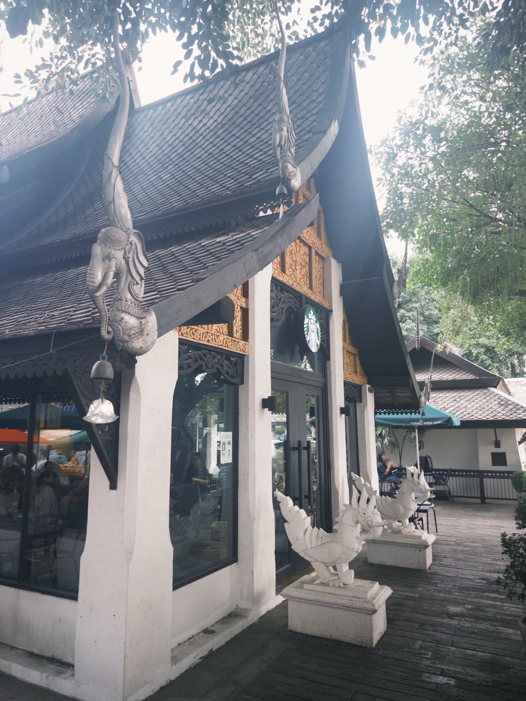
南奔火車與慢旅行
地方火車南奔旅行慢節奏
- 這裡有什麼好看
- 地方火車、月台、車廂和從城市慢慢換成郊區的景色。
- YoYo 小提醒
- 班次和實際搭乘方式以當天安排為準，集合與上車時間要聽清楚。
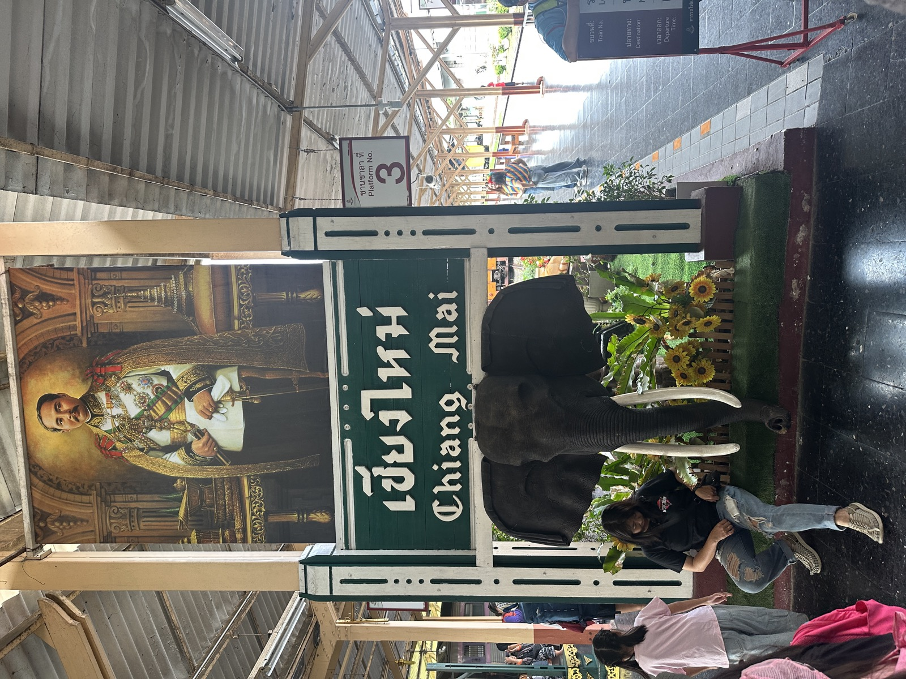
Kao Mai Estate 1955 老菸廠活化園區
老建築活化文化保存拍照散步
- 這裡有什麼好看
- 舊菸葉烘房、紅磚建築、爬藤與老工業空間重新變成文化、餐飲和休閒場域。
- YoYo 小提醒
- 先使用「文化資產保存獎項肯定的活化園區」這種較精準的說法。
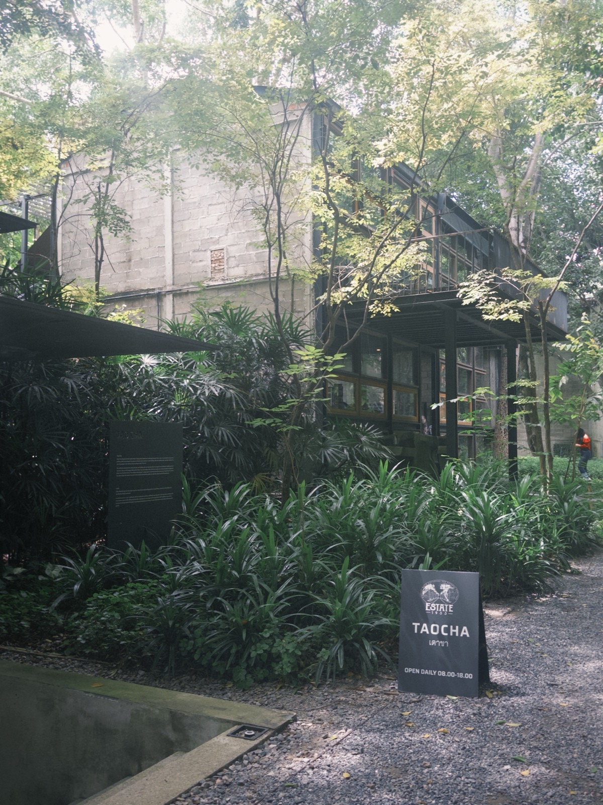
以下景點為清邁與南奔的常見亮點，實際景點安排依各團體行程說明會資料為主。清萊先不放在這一版，之後有實際走訪與資料再另外加入。
清邁可以體驗什麼？
旅行不只把景點走完，留一段時間放鬆或換個樣子玩，也會讓這趟泰北更有記憶。
泰式按摩與洗頭
走了一整天後，想讓自己好好休息一下，泰式按摩或洗頭都是很舒服的選項。開始前先說好力道和自己在意的地方就好。
泰服與寺廟拍照
想為旅行留一組不一樣的照片時，泰服體驗可以依自己的喜好安排。寺廟參觀仍要留意衣著與現場拍照規定。
想安排體驗時，直接問領隊或當地導遊就好；我們會依當天的位置與時間，分享口碑不錯、適合大家參考的店家選項。
來清邁，可以吃什麼？
不用一次吃完所有名物，挑幾樣真正有興趣的，旅行會更舒服。
泰北咖哩麵 Khao Soi
椰奶和咖哩香氣比較明顯，上面常搭配酥脆炸麵條，柔軟和脆脆的口感一起吃很有記憶點。
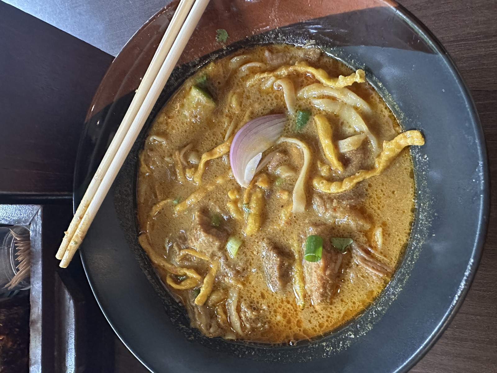
泰北香腸 Sai Ua
香料味比較明顯，和台灣常見香腸不太一樣。喜歡香料、烤物或重口味的人，可以從它開始認識泰北味道。
泰國水果
天氣熱時來一份山竹、龍眼或當季水果，是很有旅行感的小享受。想吃多少就挑多少，留一點肚子給接下來的行程。
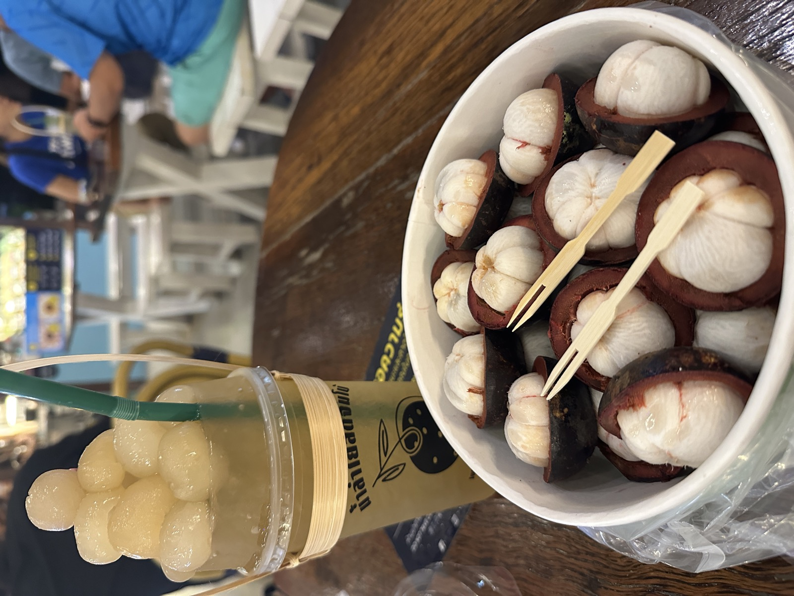
手標泰奶 ChaTraMue
大家熟悉的經典泰奶，甜度照自己的習慣調整就好。走累時來一杯，剛好把步調放慢一點。
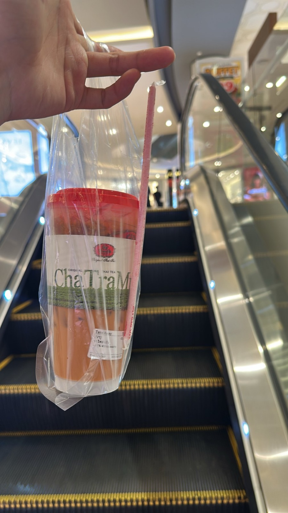
古城散步時看到想試的料理，挑一間環境覺得舒服的坐下來吃就好。餐點衛生與個人飲食狀況還是依自己當下判斷，不用為了集滿清單而勉強。
清邁可以買什麼？
伴手禮不用買得很滿，挑一個自己真的喜歡、回台灣也用得到的小物就好。
果乾與泰北零食
芒果乾、果乾、餅乾、洋芋片和糖果比較容易分享。挑自己真的會吃的份量就好。
香氛與精油
適合喜歡讓房間留一點旅行味道的人。先聞味道，再確認容量和包裝是否方便攜帶。
草藥鼻通
搭車、天氣悶熱或想提神時，很多人會想帶一支放在身邊。
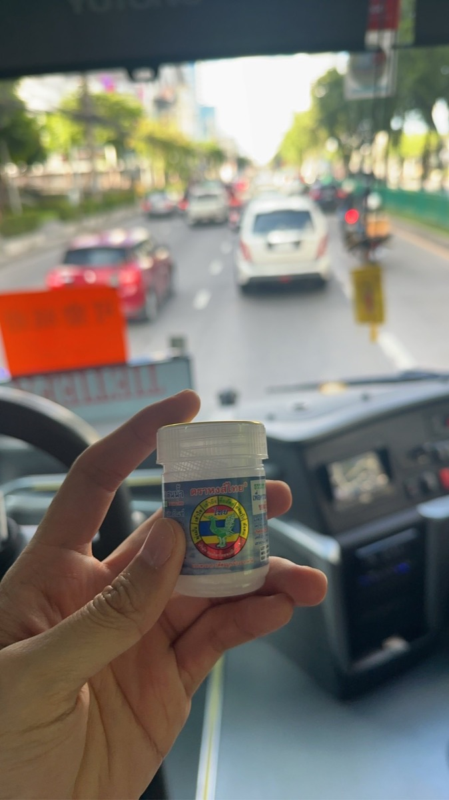
手工藝與特色小物
手作包、飾品、木雕、布品和小型家飾，常常比制式紀念品更能留下清邁的手感。
7-11 與便利小物
飲料、零食和日常小物可以當成旅途中的小發現，看到有興趣的就先記下來，不需要每樣都買。
鹹蛋黃洋芋片
鹹香味很有記憶點，買一包回去和朋友一起拆，很適合當旅行的小分享。
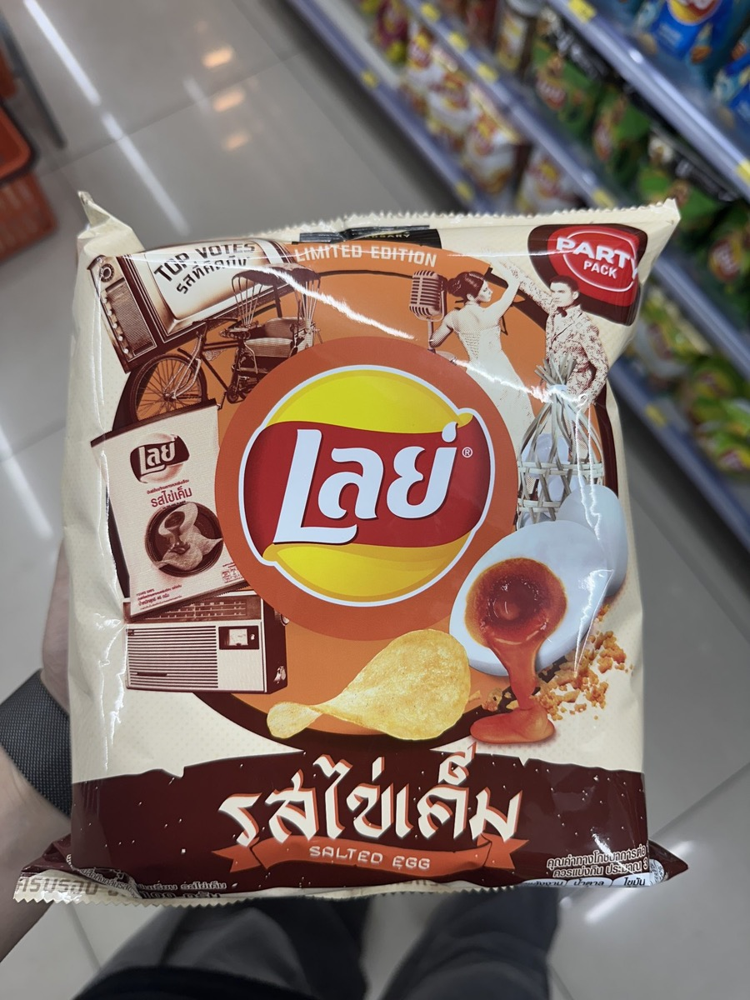
泰式風味零食
酸、辣和香料感各有不同，挑自己平常會想吃的口味就好。
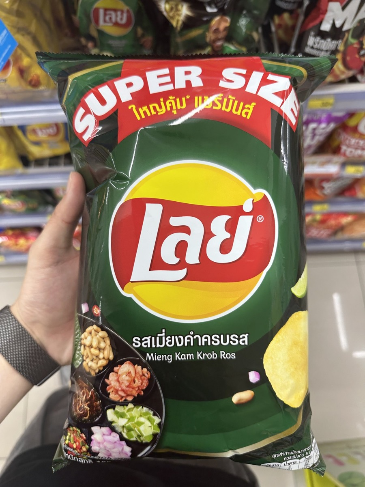
西瓜涼糖
小小一盒很輕巧，走路走累時來一顆，清涼感很舒服。
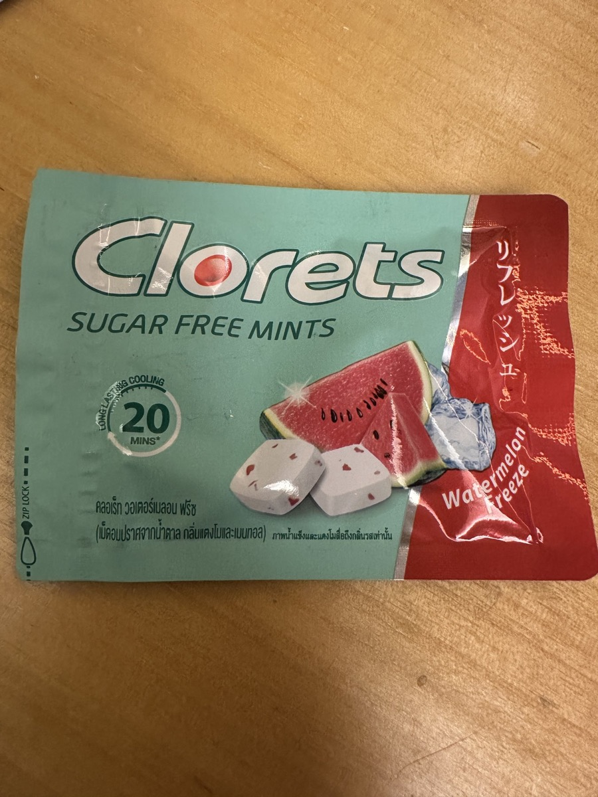
液體、易漏、易碎或需要托運的物品，回程前再和行李一起整理。若不確定攜帶方式，問一下領隊會比較安心。